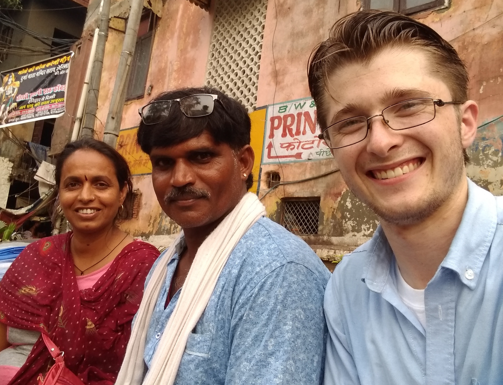

Stuff in India
Please contact me with better ideas for a name!
A Haircut
July 22, 2019

I had a lot of time to kill at the train station. I thought my train was leaving at 5, but it turned out to be 11! No matter though, because I'll be damned if there's a part of this country without something interesting or crazy or new.
The neighborhood near the station was pretty ah... hmm... authentic? Rough-and-tumble? There was a lot going on.
I came to a little 80 square foot barber shop, and was welcomed to a chair. The guy didn't speak any English nor I any Hindi. Grunts gestures and facial expressions did pretty good. Anyway the point wasn't the hair, but getting to sit down and chill, and to meat someone and see what was going on.
I wandered around a bunch more, and exchanged hinglish/engli with a women. She asked for a selfie, so it was only fair I got one too.
I also spent an hour or so with a drunk rickshaw driver who didn't seem to mind I didn't undertand anything he said. We tried to use google translate, but he wouldn't wait until it was listening for hindi, and even then it was either very innacurate or he was completely incoherent. (not sure which was most likely)
I had a bunch of delicious mangos I didn't really want to keep around, so he helped me with that. He also had a very clean way of eating them which is useful. Overall, it was a fun wait for the train.